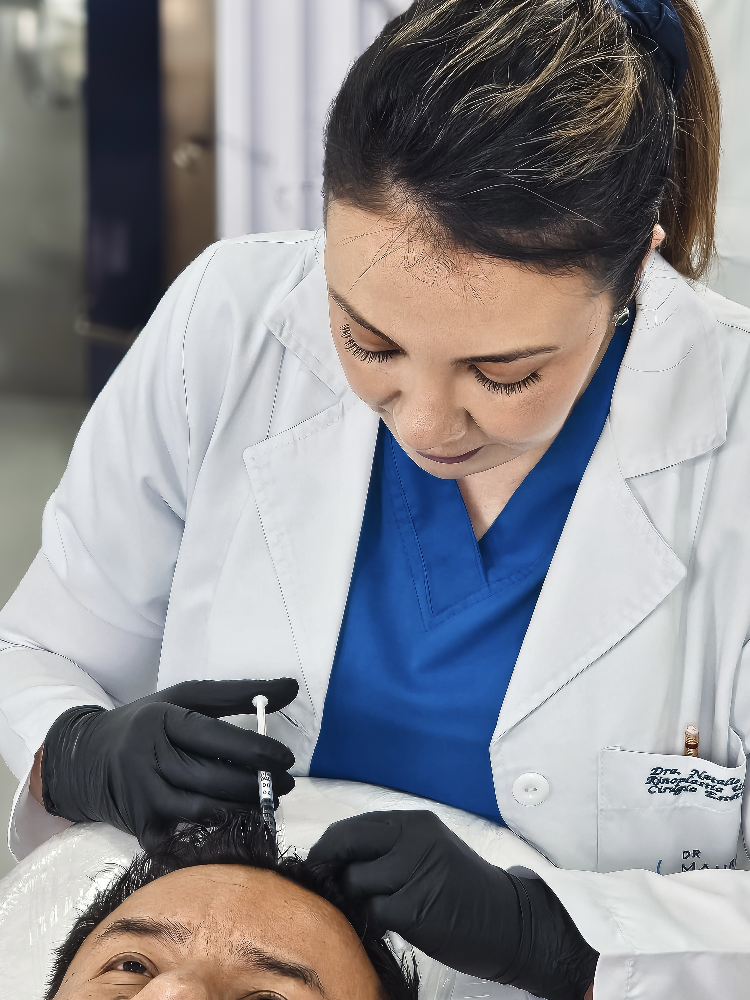

RECOMENDACIONES PARA DESPÚES DE TU MICROIMPLANTE CAPILAR
1. Reposo inicial y cuidados generales:
Mantener reposo relativo durante las primeras 24–48 horas.
Evitar esfuerzos físicos intensos, levantamiento de peso o ejercicio vigoroso durante 7 días.
No tocar, rascar ni frotar la zona implantada.
Dormir con la cabeza ligeramente elevada (45º) para evitar inflamación y favorecer el drenaje.
2. Higiene y lavado capilar:
El primer lavado suele recomendarse entre las 24 y 72 horas, según indicación médica personalizada.
Utilizar shampoo neutro o postimplante, suave, sin agentes irritantes ni perfumes intensos.
Aplicar el shampoo con las yemas de los dedos o una esponja suave, sin frotar directamente sobre los injertos.
Secar con toalla de papel o al aire. No usar secador con calor directo durante las primeras semanas.
3. Medicación y cuidados farmacológicos:
Cumplir estrictamente el tratamiento antibiótico, analgésico o antiinflamatorio indicado.
Uso tópico o sistémico de minoxidil solo si está autorizado por el profesional tratante (generalmente reintegrado semanas después).
En algunos casos puede indicarse plasma rico en plaquetas (PRP) o suplementos específicos tras la cicatrización.
4. Protección solar y ambiental:
Evitar exposición directa al sol durante al menos 15 días.
Usar gorra de tela ligera y transpirable solo después de la primera semana y bajo recomendación médica.
No exponer la zona implantada a ambientes sucios, contaminados o de riesgo de contacto.
5. Actividades cotidianas:
No asistir a piscinas, playas, saunas, baños turcos o espacios húmedos hasta transcurrido un mínimo de 30 días.
Evitar el uso de casco o gorros ajustados que rocen los injertos durante el primer mes.
Abstenerse de cortar, teñir o aplicar productos químicos al cabello por al menos 60 días.
6. Evolución del injerto y expectativas normales:
Puede presentarse caída transitoria de los cabellos implantados en las primeras semanas (efluvio telógeno), lo cual es normal.
Los nuevos cabellos comienzan a crecer entre el tercer y sexto mes, con fortalecimiento progresivo hasta los 12 meses.
Es importante mantener un seguimiento médico personalizado durante todo el proceso.
7. Compromiso con el tratamiento:
La adherencia total a las indicaciones médicas es fundamental para obtener resultados óptimos.
El paciente debe mantener una rutina disciplinada de cuidado domiciliario y asistir a los controles establecidos.
La constancia, la paciencia y el seguimiento adecuado marcan la diferencia en la recuperación capilar.
